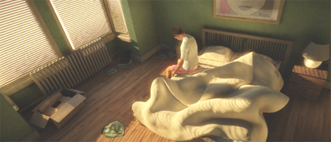
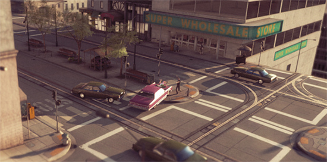

HDR (High Dynamic Range) Rendering in Unity
In standard rendering, the red, green and blue values for a pixel are each represented by a fraction in the range 0..1, where 0 represents zero intensity and 1 represents the maximum intensity for the display device. While this is straightforward to use, it doesn't accurately reflect the way that lighting works in a real life scene. The human eye tends to adjust to local lighting conditions, so an object that looks white in a dimly lit room may in fact be less bright than an object that looks grey in full daylight. Additionally, the eye is more sensitive to brightness differences at the low end of the range than at the high end.
More convincing visual effects can be achieved if the rendering is adapted to let the ranges of pixel values more accurately reflect the light levels that would be present in a real scene. Although these values will ultimately need to be mapped back to the range available on the display device, any intermediate calculations (such as Unity's image effects) will give more authentic results. Allowing the internal representation of the graphics to use values outside the 0..1 range is the essence of High Dynamic Range (HDR) rendering.
Working with HDR
HDR is enabled separately for each camera using a setting on the Camera component:-

When HDR is active, the scene is rendered into an HDR image buffer which can accommodate pixel values outside the 0..1 range. This buffer is then postprocessed using image effects such as HDR bloom. The tonemapping image effect is what converts the HDR image into the standard low dynamic range (LDR) image to be sent for display. The conversion to LDR must be applied at some point in the image effect pipeline but it need not be the final step if LDR-only image effects are to be applied afterwards. For convenience, some image effects can automatically convert to LDR after applying an HDR effect (see Scripting below).
Tonemapping
Tonemapping is the process of mapping HDR values back into the LDR range. There are many different techniques, and what is good for one project may not be the best for another. A variety of tonemapping image effects have been included in Unity. To use them select Assets -> Import Package -> Image Effects (Pro Only) select the camera in the scene then select Component -> Image Effects ->ToneMapping a detailed description of the tonemapping types can be found in the image effects documentation.

An exceptionally bright scene rendered in HDR. Without tonemapping, most pixels seem out of range.

The same scene as above. But this time, the tonemapping effect is bringing most intensities into a more plausible range. Note that adaptive tonemapping can even blend between above and this image thus simulating the adaptive nature of capturing media (e.g. eyes, cameras).
HDR Bloom and Glow
Using HDR allows for much more control in post processing. LDR bloom has an unfortunate side effect of blurring many areas of a scene even if their pixel intensity is less than 1.0. By using HDR it is possible to only bloom areas where the intensity is greater than one. This leads to a much more desiarable outcome with only super bright elements of a scene bleeding into neighboring pixels. The built in 'Bloom and Lens Flares' image effect now also supports HDR. To attach it to a camera select Assets -> Import Package -> Image Effects (Pro Only) select the camera in the scene then select Component -> Image Effects ->Bloom a detailed description of the 'Bloom' effect can be found in the image effects documentation.

The car window sun reflections in this scene have intensity values far bigger than 1.0. Bloom can only pick up and glow these parts if the camera is HDR enabled thus capturing these intensities.

The car window will remain without glow if the camera is not HDR enabled. Only way to add glow is to lower the intensity threshhold but then unwanted parts of the image will start glowing as well.
Advantages of HDR
- Colors not being lost in high intensity areas
- Better bloom and glow support
- Reduction of banding in low frequency lighting areas
Disadvantages of HDR
- Uses Floating Point buffers (rendering is slower and requires more VRAM)
- No hardware anti-aliasing support (but you can use Anti-Aliasing image effect to smooth out the edges)
- Not supported on all hardware
Usage notes
Forward Rendering
In forward rendering mode HDR is only supported if you have an image effect present. This is due to performance considerations. If you have no image effect present then no tone mapping will exist and intensity truncation will occur. In this situation the scene will be rendered directly to the backbuffer where HDR is not supported.
Deferred Rendering
In HDR mode the light prepass buffer is also allocated as a floating point buffer. This reduces banding in the lighting buffer. HDR is supported in deferred rendering even if no image effects are present.
Scripting
The ImageEffectTransformsToLDR attribute can be added to an image effect script to indicate that the target buffer should be in LDR instead of HDR. Essentially, this means that a script can automatically convert to LDR after applying its HDR image effect.
Page last updated: 2012-09-05